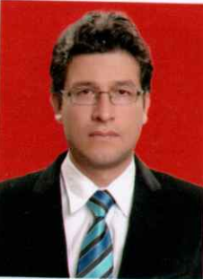

| N° | Entidad / Empresa | Objeto del Contrato / Proyecto | Monto (Bs.) | Cargo | Período |
|---|---|---|---|---|---|
| 1 | Consultora CONASING para FDC | Estudio a diseño final ‘Puente vehicular Azero Norte’ | 10.000 | Consultor en hidrología e hidráulica | 05/1999 - 08/1999 |
| 2 | Consultora CONASING para FDC | Estudio a diseño final ‘Puente vehicular Villa Charcas’ | 10.000 | Consultor en hidrología e hidráulica | 09/1999 - 01/2000 |
| 3 | VPEPR - Banco Mundial | Asistencia Técnica en Proyectos | 40.000 | Consultor en Proyectos y Medio Ambiente | 07/2000 - 12/2000 |
| 4 | Gobierno Autónomo Municipal Sucre | Conservación de suelos ‘Gaviones Los Tarcos’, Saneamiento de quebradas y Rehabilitación Colector Villa Rosario | 83.200 | Proyectista Unidad de Estudios y Proyectos | 01/2001 - 12/2002 |
| 5 | FNDR Consultora J.V | Supervisión construcción ‘Mercado central y Alojamiento Padilla’ | 1.280.000 | Residente de Supervisión | 07/2005 - 12/2006 |
| 6 | Unión Europea / Consultora J.V. | Supervisión Planta de tratamiento y refacción de canal de riego Sotomayor | 2.780.000 | Residente de Supervisión | 07/2006 - 01/2008 |
| 7 | GTZ - Programa GESPRO | Sistemas de riego Cantar Gallo, Pajcha y obras de alcantarillado/caminos | 7.000 | Asesor técnico | 03/2007 - 08/2007 |
| 8 | GTZ - Programa GESPRO | Supervisión Paso a desnivel Bifurcación J. Mendoza | 2.000.000 | Residente de Supervisión | 03/2008 - 12/2008 |
| 9 | MOPVS - UECID | Fiscalización a la construcción del Polideportivo, Piscina y Poligimnasio Olímpicos | 124.000.000 | Fiscal de Estructuras | 10/2008 - 03/2009 |
| 10 | Concejo Agropecuario Deptal. | Peritaje técnico Proyecto Tinglado Mercado Campesino de Sucre | 9.000 | Perito | 04/2009 - 06/2009 |
| 11 | GADCH - SEDCAM CH | Jefatura Unidad Estudios y Proyectos | 575.400 | Jefe Unidad de E. y Proyectos | 07/2009 - 04/2016 |
| 12 | GADCH - SEDCAM CH | Estudio a Diseño final Técnico – Ambiental proyecto Alcantari Puente Méndez | 140.000 | Gerente del equipo de diseño | 02/2011 - 08/2011 |
| 13 | SEDCAM CH | Construcción camino Alcantari Puente Méndez | 15.727.067 | Superintendente encargado de Proyecto | 02/2011 - 12/2013 |
| 14 | SEDCAM CH | Mejoramiento camino Cr. Yapucaiti - Uruguay - San Juan del Pirai | 15.959.821 | Superintendente encargado de Proyecto | 07/2010 - 12/2013 |
| 15 | SEDCAM CH | Programa Mantenimiento y Mejoramiento vial zona norte Chuquisaca | 6.720.000 | Superintendente Encargado | 01/2014 - 12/2014 |
| 16 | SEDCAM CH | Programa Mantenimiento y Mejoramiento vial zona norte Chuquisaca | 8.561.445 | Superintendente Encargado | 01/2015 - 04/2016 |
| 17 | GAM Sucre | Mejoramiento Av. Marcelo Quiroga Santa Cruz | 35.755.385 | Supervisor Obras de impacto | 07/2016 - 11/2016 |
| 18 | GAM Sucre | Ampliación Av. Juana Azurduy de Padilla | 87.721.542 | Supervisor Obras de impacto | 07/2016 - 11/2016 |
| 19 | GADCH - Consultora AAIPA | Construcción Represa El Tranque Grande de Culpina (EDTPI) | 1.202.337 | Gerente EDTPI / Esp. Hidráulico Hidrólogo | 01/2017 - 12/2017 |
| 20 | GAM Sucre | Contrato Empréstito ISSA CONCRETEC (Infraestructura vial) | 5.000.000 | Supervisor externo de obras | 08/2017 - 12/2017 |
| 21 | Empresa ARVA | Construcción obras hidráulicas MIC Sauce Zapallar | 1.284.844 | Director de obra | 01/2018 - 09/2018 |
| 22 | Empresa Consultora DESMA | Rediseño presas Khota Pata, Tomoroco y Camatindi | 390.000 | Especialista en hidráulica y presas | 11/2018 - 05/2019 |
| 23 | Consultora Saavedra Vargas / UCEP Mi Riego | Construcción presa Unala – Jatun Era (Estudio TESA) | 345.000 | Especialista Hidráulico Hidrólogo | 05/2019 - 11/2019 |
| 24 | DESMA / UCEP Mi Riego / CFA 9759 | Construcción Presa y sistema de riego Thinkusiri | 1.370.000 | Especialista Hidráulico Hidrólogo | 04/2019 - 03/2020 |
| 25 | Empresa ARVA | Ampliación obras civiles Aeropuerto Jorge Henrich Arauz (Trinidad) | 12.506.824 | Especialista hidráulico-sanitario | 10/2019 - 05/2021 |
| 26 | Empresa Luis Heredia | EDTPI ‘Construcción Presa Quebrada Onda’ | 550.000 | Especialista en hidráulica de presas | 11/2021 - 10/2022 |
| 27 | Empresa DESMA | Manejo Integral de las cuencas Charaña, Sehuenca y Pallina | 600.000 | Especialista en hidrología e hidráulica | 03/2022 - 05/2022 |
| 28 | Empresa DESMA | Plan de Aprovechamiento Hídrico Local (PAHL) subcuenca río Juchuy Jahuira | 500.000 | Especialista en hidrología y SIG | 12/2022 - 07/2023 |
| 29 | Consultora CCOAS / UCEP Mi Riego | EDTPI: ‘Construcción de Sistema De Riego y Presa El Cajón (Tarija)’ | 600.000 | Especialista en hidrología e hidráulica de presas | 01/2023 - 08/2023 |
| 30 | Empresa DESMA / UCEP Mi Riego | EDTPI ‘Construcción Presa Y Sistema De Riego Tecnificado El Molino – Camargo’ | 550.000 | Especialista en hidrología e hidráulica de presas | 06/2023 - 03/2024 |
| 31 | DESMA SRL / UCP PPCR | EDTPI ‘Construcción Presa y Sistema de Riego Pinaya’ | 732.506 | Especialista en hidrología e hidráulica de presas | 05/2023 - 02/2024 |
| 32 | DESMA SRL / UCP PPCR | EDTPI ‘Construcción Presa y Sistema de Riego Central Agraria Cayimbaya’ | 779.612 | Especialista en hidrología e hidráulica de presas | 05/2023 - 02/2024 |
| 33 | Asoc. Accidental D y D / GAM San Julián | Estudio de Ampliación Implementación Sistema de Drenaje – San Julián | 700.000 | Especialista en hidrología e hidráulica | 04/2024 - 06/2025 |
| 34 | Empresa DESMA / UCEP Mi Riego | EDTPI ‘Construcción Represa y Sistema de Riego Sub Central Challhuani (Pojo)’ | 2.000.000 | Especialista en hidrología e hidráulica de presas | 05/2024 - 06/2025 |
| 35 | UCP-PAAP | Evaluación Técnica a las obras ejecutadas en la PTAR ‘Agua potable y alcantarillado Cobija’ | 211.040 | Especialista en Hidrogeología, Hidrogeoquímica e hidráulica | 07/2026 - 09/2026 |
CURRICULUM VITAE
Ing. Luis Alberto Avila Borja

Datos Personales
- Nombre Completo: Luis Alberto Avila Borja
- Cédula de Identidad: 4630221 (Chuquisaca)
- Edad: 51 años
- Nacionalidad: Boliviana
- Profesión: Ingeniero Civil
- Registro Profesional: RNI 9080
Perfil Profesional y Áreas de Especialización
Especialista en modelación y gestión computacional acoplada hidrológica-hidrogeológica-geotécnica con sólida base en Python, Inteligencia Artificial y Sistemas de Ingeniería 5.0.
Posee amplia experiencia en la gestión, diseño, supervisión y evaluación de proyectos de recursos hídricos, infraestructura vial e ingeniería de presas, habiendo colaborado activamente en proyectos licitados por el Gobierno de Bolivia y financiados por organismos internacionales (Banco Mundial, Unión Europea, GTZ, UCEP Mi Riego, UCP PPCR).
Competencias Técnicas Clave
- Modelación Hidrológica e Hidrogeológica: Modelación distribuida multidimensional con datos de sensores remotos y SIG. Manejo de variables forzantes de balances energéticos e hídricos distribuidos (SolarFlux, ETR Priestley-Taylor Jet Propulsion).
- Software Hidrológico e Hidráulico: WEAP, PT-Jet Propulsion, HEC-RAS, HEC-HMS, WaterCAD, Civil 3D.
- Hidrogeología Numérica: Flujo en medios porosos con Visual MODFLOW, AquiferTest y AQTESOLV.
- Análisis Estructural y Geotécnico de Presas:
- Análisis dinámico lineal y no lineal con interacción fluido-estructura-cimentación (reservorios compresibles e incompresibles).
- Análisis de estabilidad y tensión-deformación con Elementos Finitos (FEM) y Equilibrio Límite usando PLAXIS y GeoStudio (QUAKE/W, SLOPE/W, SIGMA/W).
- Diseños bajo normas AASHTO-LRFD y SAP2000 avanzado.
- Docencia Universitaria: Profesor de posgrado en el Método de Elementos Finitos (FEM) y modelación numérica (EBP-Univ. José Ballivián, Univ. Juan Misael Saracho).
1. Formación Académica
| Período | Grado Académico / Titulación | Institución |
|---|---|---|
| 1994 – 1999 | Licenciado en Ingeniería Civil (Título en Provisión Nacional) | Universidad Mayor, Real y Pontificia de San Francisco Xavier de Chuquisaca |
| 2001 – 2005 | Licenciado en Lenguas Modernas (Inglés y Alemán) | Universidad Mayor, Real y Pontificia de San Francisco Xavier de Chuquisaca |
| 2010 – 2013 | Magíster en Hidrogeología y Recursos Hídricos | Universidad Mayor, Real y Pontificia de San Francisco Xavier de Chuquisaca |
| 2016 | Diplomado en Educación Superior | Universidad Nacional Siglo XX |
| 2023 | Diplomado en Ingeniería de Presas (Titulación en proceso) | Universidad Nacional Siglo XX |
| 2024 | Diplomado en Ingeniería Estructural (Titulación en proceso) | Universidad Nacional Siglo XX |
2. Cursos de Especialización y Actualización
| Período | Curso / Programa de Capacitación | Institución | Carga Horaria |
|---|---|---|---|
| 04/2008 | ArcGIS | Instituto CIBERTEC | 20 hrs |
| 06/2008 | ArcView | Instituto CIBERTEC | 20 hrs |
| 09/2009 – 12/2009 | Hidrogeología física, flujo en medios porosos y modelaje de flujo de agua | University of Waterloo | 100 hrs |
| 09/2010 | ArcGIS Desktop 2 | Geosystems | 24 hrs |
| 03/2011 | Seminario internacional de mantenimiento sostenible de caminos rurales | Sociedad de Ingenieros de Bolivia | 20 hrs |
| 08/2011 – 09/2011 | Diseño de puentes con aplicación de la norma AASHTO-LRFD 2007 | Colegio de Ingenieros Civiles Ch. | 20 hrs |
| 12/2011 | Aplicación y manejo de equipos geodésicos GPS | COLQUEVIA S.R.L. | 30 hrs |
| 08/2012 | 2das Jornadas Internacionales del Cemento y el Hormigón | Instituto Boliviano del Cemento y Hormigón | 30 hrs |
| 08/2018 | Estructura y gestión de los proyectos de riego | CICCH - GADCH - Eduardo Consultora | 16 hrs |
| 08/2018 | Análisis y diseño de obras hidráulicas de captación para riego y abastecimiento | CICCH - GADCH - Eduardo Consultora | 20 hrs |
| 10/2018 | AutoCAD 3D | Instituto CIBERTEC | 30 hrs |
| 10/2018 | Modelación de presas de materiales sueltos | CICCH - GADCH - Eduardo Consultora | 20 hrs |
| 10/2018 – 11/2018 | WaterCAD | Instituto CIBERTEC | 30 hrs |
| 11/2018 | Procesamiento SIG aplicado al análisis de riesgo y resiliencia climática de proyectos de riego | CICCH - GADCH - Eduardo Consultora | 20 hrs |
| 08/2018 – 11/2018 | Programa de formación y alta especialidad en riego y Recursos Hídricos | CICCH - GADCH - Eduardo Consultora | 160 hrs |
| 01/2019 | SAP 2000 Avanzado | Instituto CIBERTEC | 30 hrs |
| 01/2019 – 02/2019 | AutoCAD Civil 3D | Instituto CIBERTEC | 30 hrs |
| 01/2019 | Diseño de riego tecnificado en sistemas colectivos | CICCH - GADCH - Eduardo Consultora | 20 hrs |
| 05/2019 | Aplicación de drones y aerofotogrametría a proyectos de riego y recursos hídricos | CICCH - GADCH - Eduardo Consultora | 25 hrs |
| 06/2019 | Simulación y operación de embalses en escenarios de cambio climático | CICCH - GADCH - Eduardo Consultora | 20 hrs |
| 07/2019 | Aplicación de Civil 3D al diseño y construcción de proyectos de riego | CICCH - GADCH - Eduardo Consultora | 25 hrs |
| 08/2019 | Diseño estructural de presas de gravedad con aplicación de planillas Excel | CICCH - GADCH - Eduardo Consultora | 25 hrs |
3. Experiencia Profesional
Ing. Luis Alberto Avila Borja
Registro Nacional de Ingeniería: 9080